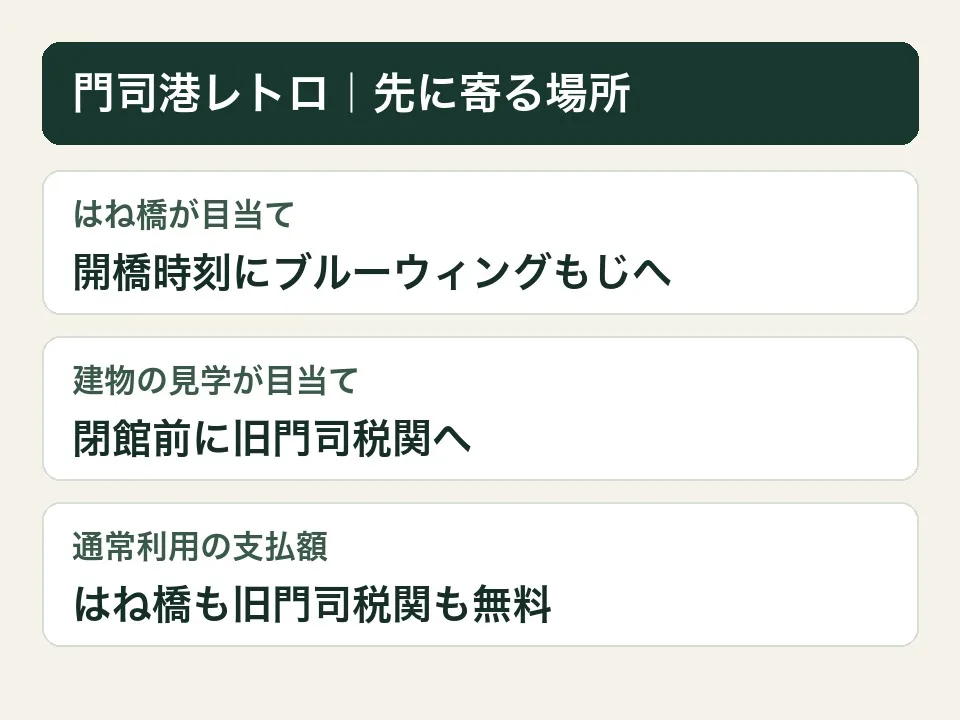

門司港レトロの散策では、はね橋が動くところを見たいならブルーウィングもじの開橋時刻から、建物の中を見たいなら旧門司税関の閉館時刻から歩く順番を決めると回りやすくなります。JR門司港駅からどちらも徒歩で行け、橋の利用料と旧門司税関の通常入場料はともに無料です。2026年11月25日時点の公式案内をもとに、目的ごとに駅からの順番を組みます。
01門司港駅からの散策ルートを選ぶ
| 目的 | 先に向かう場所 | 駅からの徒歩目安 | 現地で見る時刻 |
|---|---|---|---|
| はね橋が上がるところを見る | ブルーウィングもじ | 約5分 | 開橋時刻 |
| 展示や赤れんがの建物を見学する | 旧門司税関 | 約11分 | 開館時間9:00〜17:00 |
徒歩時間はいずれもJR門司港駅から各施設までです。駅からの目安を引き算して、施設間の移動時間に使わないようにします。駅を出る前に公式ガイドマップを開き、駅、橋、税関の位置関係を確認しておくと、橋を渡る予定に変更が出ても次の行き先を選べます。

写真はそらみみ（Soramimi）撮影の ブルーウィングもじと旧門司税関の遠景 を縮小しました。掲載画像は原版と同じ CC BY-SA 4.0 で提供します。

02はね橋の開閉を見るなら何時に行く？
北九州埠頭が案内する通常の開橋は10:00、11:00、13:00、14:00、15:00、16:00です。閉橋はそれぞれ10:20、11:20、13:20、14:20、15:20、16:20です。午前から昼にかけては間隔が異なります。昼食の前後で合わせたいときは、たとえば午前の終わりの11:00に見るか、午後の最初の13:00に見るかを先に決めると、他の予定が組みやすくなります。
注意開閉は気象状況などで中止される場合があります。開時刻・閉時刻は橋の動きを見る目安です。渡るときは現地の案内と安全表示に従ってください。
橋の動きを見たい日は、橋を渡り始める時刻と橋を見に行く時刻を分けて考えると判断しやすくなります。開く様子を見るなら、予約した食事など次の予定に向かう通り道として橋を当てにせず、岸側で見られる時間を取りましょう。北九州埠頭の開閉案内。
03旧門司税関は閉館から逆算する
旧門司税関では、赤れんがの外観と建物の中で見どころを分けて考えられます。公式案内では、外壁の赤れんがや御影石などが残り、館内には門司税関広報展示室が設けられています。関門海峡の船やはね橋を望む展望施設としても案内されています。
夕方着いて展示まで見たい日は、先に旧門司税関へ行き、外からの写真や水辺の散策を後に回すと、閉館時刻に合わせて歩けます。橋の開閉と館内見学の両方を入れるときは、開橋の時刻ぴったりに到着する旅程を避け、現地で歩く余裕を取ってください。旧門司税関の公式案内。

04入場料をかけずにどこまで回れる？
北九州都市圏域と門司港レトロ公式HPの料金案内では、橋と旧門司税関の通常入場は無料です。駅から歩いてこの範囲を見学する場合、現地の通行・入場にかかる支払額は合計0円で、割引券は不要です。駅までの移動費と館内の飲食代は別です。
海辺を歩いて見学先を選ぶ旅行なら、松島海岸駅から歩く松島の観光コースも参考になります。
05よくある質問
門司港レトロの散策は何時から始めるといいですか？
はね橋が目当てなら開橋時刻に合わせます。旧門司税関が目当てなら、9:00〜17:00の開館時間内に見学できるように組みます。
門司港駅から旧門司税関はどのくらい歩きますか？
施設の公式案内ではJR門司港駅から徒歩約11分です。
はね橋や旧門司税関は無料ですか？
橋の利用と旧門司税関の通常入場は無料です。飲食などの費用は別です。
06まとめ
- はね橋を見たい日は開橋時刻を先に決め、岸側で見られる時間を取ります。
- 歴史展示を見たい日は旧門司税関を先にして、散策や写真を後に回せます。
- 橋と旧門司税関の通常利用は無料です。駅までの移動と現地見学の予算を分けて予定を立てられます。